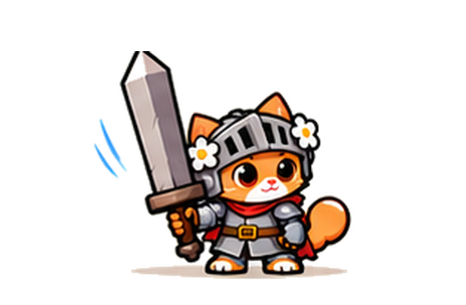

Храбролап — удар огромным мечом
Шесть исходных кадров из утверждённого листа. Проверяем форму, непрерывность и попадание.
Это просмотр кадров, не новая версия игры. Можешь остановить удар и выбрать любой кадр.
Кадр 1 / 6
2D · ЭТАЛОН В ПРОВЕРКЕ

1 · СтойкаСтоит на земле, меч вертикально, готовится к удару.
Темп:
Все 6 кадров · нажми для просмотра
Что ещё не принятоКадры вырезаны из одного утверждённого художественного листа, но это ещё не финальные игровые спрайты: у меча и рук есть скачки между позами, а края эффектов местами обрезаны. Котёнок должен оставаться с двумя ушами, одинаковыми глазами, одним шлемом и тем же огромным мечом.